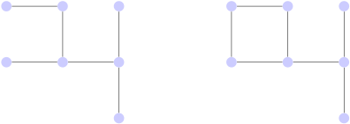

Graphs and Paths
Basic Definitions
The word ‘graph’ is used in two quite distinct ways in mathematics. First there is the sort of graph which is drawn on \(x\) and \(y\) axes. However, graph theory is concerned with another sort, where a graph may represent a network. The following diagram represents a graph.
A graph consists of:
-
a set \(V\) of vertices;
-
a set \(E\) of edges.
The plural of vertex is vertices.
For example, the first example above has vertex set \(V = \{ 1, 2, 3, 4, 5, 6, 7\} \) and edge set
\[ E = \{ \{ 1,2\} , \{ 2,3\} , \{ 2,4\} , \{ 3,5\} , \{ 4,6\} , \{ 5,7\} , \{ 6,7\} \} . \]In most of our examples we won’t write these sets out quite so formally and will usually just draw a diagram. Note here that we can think of an edge as an unordered pair of vertices because there are no directions indicated on the edges. A graph may have an infinite number of vertices and/or edges, but we’ll only consider finite graphs.
Another example of a graph is shown below. This has vertex set \(\{ a,b,c,d\} \) and edge set \(\{ \{ b,c\} ,\{ b,d\} ,\{ c,d\} \} \). Note that in the diagram of a graph edges may appear to cross. These crossings are ignored: edges have to start and end at a vertex.
The positions of the vertices also do not matter. So the following graph is considered to be the same as the previous graph.
Two vertices in a graph may be joined by two or more edges; such edges are called multiple edges. Also, an edge may join a vertex to itself; such an edge is called a loop. A graph which has no loops or multiple edges is called a simple graph.
The degree of a vertex is the number of edges incident with it (with a loop counting as two). For example, the degree of the vertex labelled \(a\) is \(3\) and the degree of the vertex labelled \(c\) is \(4\).
Examples and Applications
There are many objects and situations from everyday life which are conveniently represented by graphs. The vertices and edges may be represented in various ways, and may also be labelled in some way. Some examples are:
-
Vertices are people, edges between them represent some sort of social relationship.
-
Vertices are cities, edges between them are labelled with distances.
-
Vertices are road junctions, edges are roads.
-
Vertices are computers, edges are network connections between them.
-
Vertices are junctions in an electronic network, edges labelled with the type of component between them.
-
Vertices are atoms in a molecule, edges are chemical bonds between them.
The graph below shows Alex’s Facebook network from a couple of years ago. The larger vertices represent those with more connections within the network and the graph is laid out to show clusters of people who all know each other. This was generated using the graph visualisation software Gephi.
Many well-known algorithms act on graphs. In the following examples, edges are assumed to be labelled with a distance or cost between two vertices. Some examples are:
-
Find the lowest cost between two vertices (Shortest Path Problem).
-
Find the cheapest route visiting all vertices and returning to the starting point (Travelling Salesman Problem).
-
Find the cheapest set of connections to link all vertices (Minimal Spanning Tree).
Some More Definitions
Note: different books may vary in the use of the following terms. The main thing is to be clear and consistent, and to check what terminology is being followed in whatever text you are reading.
A walk in a graph is a sequence of edges each starting at the vertex where the previous one finishes. Its length is the number of edges in it. A walk of length zero consists of just one vertex. A trail is a walk where all the edges are different. A path is a walk where all the vertices are different. We can describe a path, a trail and a walk in the following graph.
Some examples are:
-
\(2 \rightarrow 3 \rightarrow 4\) is a path.
-
\(3 \rightarrow 2 \rightarrow 1 \rightarrow 3 \rightarrow 4\) is a trail but not a path.
-
\(1 \rightarrow 2 \rightarrow 3 \rightarrow 1 \rightarrow 2\) is a walk but not a trail.
A closed walk is a walk ending at its starting vertex. A closed trail is a set of edges which can be arranged in a trail which ends at its starting vertex.
A cycle is a closed trail which passes through each vertex no more than once. (A loop is a cycle of length 1). In the above graph some other examples are:
-
\(1 \rightarrow 2 \rightarrow 3 \rightarrow 1\) is a cycle and a closed trail. This same cycle could also be written as \(2 \rightarrow 3 \rightarrow 1 \rightarrow 2\) or \(3 \rightarrow 1 \rightarrow 2 \rightarrow 3\).
-
\(1 \rightarrow 2 \rightarrow 3 \rightarrow 1 \rightarrow 2 \rightarrow 3 \rightarrow 1\) is a closed walk but not a closed trail.
It is easy to mix these definitions up. Most of the time it won’t matter and we will often say ‘cycle’ for any walk that starts and ends at the same vertex.
A vertex \(y\) is reachable from a vertex \(x\) if there is a path from \(x\) to \(y\). Any vertex is reachable from itself by a path of length zero.
A connected graph is one where every vertex is reachable from every other vertex. For example, in our graph above, \(4\) is reachable from \(2\). But \(2\) is not reachable from \(5\). So the graph is not connected.
A tree is a connected graph which has no cycles. Trees with a distinguished vertex called the root are particulary important in computer science to describe particular types of data structure. The graph on the left below is a tree. The graph on the right below is not a tree.

A complete graph is a simple graph with an edge connecting every pair of distinct vertices. The complete graph on \(n\) vertices is denoted by \(K_n\). The following diagrams show the complete graph on five vertices, \(K_5\).
A bipartite graph is a graph whose vertices can be divided into two sets, in such a way that every edges connects a vertex in one set to a vertex in the other.